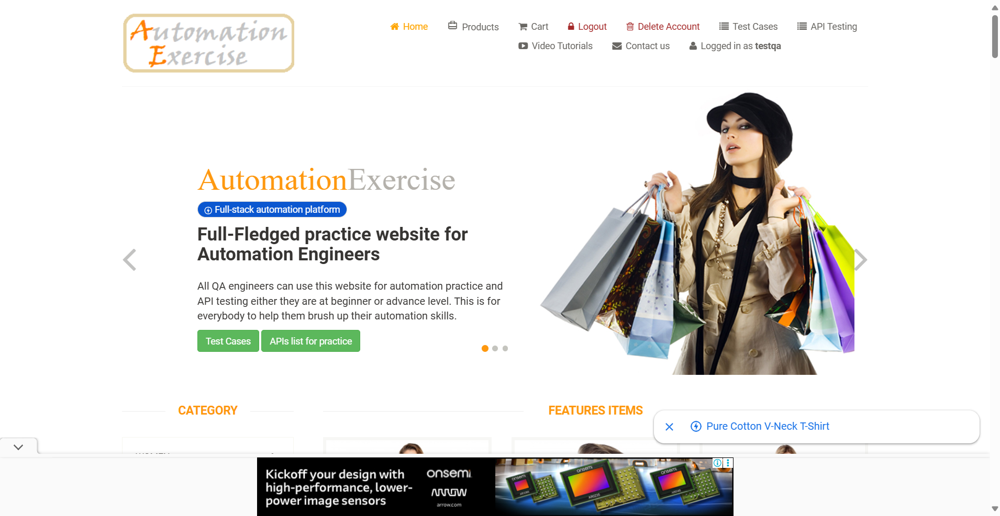

-
Products page functionality
8:19:35 PM / 00:05:02:340 Fail
Products page functionality
06.22.2025 8:19:35 PM 06.22.2025 8:24:37 PM 00:05:02:340 · #test-id=1FailVerify Brands displays correct pageFailVerify Brands displays correct pageGiven the user is logged inhooks.Hooks.addScreenshot(io.cucumber.java.Scenario)And user navigates to "Products" pageStep skippedWhen user clicks "Polo"Step skippedThen only products under "Polo" should be displayedStep skippedThen user should see products displayedStep skippedFailVerify subcategory filter displays correct productsFailVerify subcategory filter displays correct productsGiven the user is logged inAnd user navigates to "Products" pageWhen user selects subcategory "Women" and "Tops"hooks.Hooks.addScreenshot(io.cucumber.java.Scenario)Then only products under "Tops" subcategory should be displayedStep skippedPassVerify subcategory filter displays correct productsGiven the user is logged inAnd user navigates to "Products" pageWhen user selects subcategory "Women" and "Dress"Then only products under "Dress" subcategory should be displayedPassVerify subcategory filter displays correct productsGiven the user is logged inAnd user navigates to "Products" pageWhen user selects subcategory "Men" and "Tshirts"Then only products under "Tshirts" subcategory should be displayedPassVerify all images are displayedGiven the user is logged inAnd user navigates to "Products" pageWhen user is on Products pageThen user should see 34 product images displayedFailView details of the first productGiven the user is logged inAnd user navigates to "Products" pageWhen the user clicks on "View Product" of the first producthooks.Hooks.addScreenshot(io.cucumber.java.Scenario)Then the user should be landed on the product detail pageStep skippedAnd the product name, category, rating, price, availability, condition, and brand should be visibleStep skipped -
Purchase Product
8:19:35 PM / 00:04:26:904 Fail
Purchase Product
06.22.2025 8:19:35 PM 06.22.2025 8:24:02 PM 00:04:26:904 · #test-id=8FailSuccessful purchase of a productGiven the user is logged inhooks.Hooks.addScreenshot(io.cucumber.java.Scenario)Successful purchase of a productAnd user navigates to "Products" pageStep skippedWhen user clicks "Add to cart" on any productStep skippedThen user should see "Added!" message boxStep skippedAnd user clicks "Continue Shopping" buttonStep skippedAnd user navigates to "Cart" pageStep skippedThen user should see products added in cartStep skippedWhen user clicks "Proceed To Checkout" link buttonStep skippedThen user should be redirected to "checkout" pageStep skippedWhen user clicks "Place Order" link buttonStep skippedThen user should be redirected to "payment" pageStep skippedWhen user enters details for Name on Card, Card Number, CVC, Expiration Month, Expiration YearStep skippedAnd user clicks "Pay and Confirm Order" submit buttonStep skippedThen user should see "Order Placed!" messageStep skipped
-
org.openqa.selenium.NoSuchWindowException
5 tests
org.openqa.selenium.NoSuchWindowException
5 failedStatus Timestamp TestName Fail 20:24:31 PM When user selects subcategory "Women" and "Tops" Products page functionality.Verify subcategory filter displays correct products.When user selects subcategory "Women" and "Tops"Fail 20:24:31 PM hooks.Hooks.addScreenshot(io.cucumber.java.Scenario) Products page functionality.Verify subcategory filter displays correct products.hooks.Hooks.addScreenshot(io.cucumber.java.Scenario)Fail 20:24:05 PM hooks.Hooks.addScreenshot(io.cucumber.java.Scenario) Products page functionality.Verify Brands displays correct page.hooks.Hooks.addScreenshot(io.cucumber.java.Scenario)Fail 20:24:37 PM When the user clicks on "View Product" of the first product Products page functionality.View details of the first product.When the user clicks on "View Product" of the first productFail 20:24:37 PM hooks.Hooks.addScreenshot(io.cucumber.java.Scenario) Products page functionality.View details of the first product.hooks.Hooks.addScreenshot(io.cucumber.java.Scenario) -
org.openqa.selenium.TimeoutException
2 tests
org.openqa.selenium.TimeoutException
2 failedStatus Timestamp TestName Fail 20:19:45 PM Given the user is logged in Purchase Product.Successful purchase of a product.Given the user is logged inFail 20:21:03 PM Given the user is logged in Products page functionality.Verify Brands displays correct page.Given the user is logged in
-
@smoketest
7 tests
@smoketest
3 passed 4 failedStatus Timestamp TestName Fail 20:19:35 PM Verify Brands displays correct page Products page functionality.Verify Brands displays correct pageFail 20:19:35 PM Verify subcategory filter displays correct products Products page functionality.Verify subcategory filter displays correct productsPass 20:19:35 PM Verify subcategory filter displays correct products Products page functionality.Verify subcategory filter displays correct productsPass 20:19:35 PM Verify subcategory filter displays correct products Products page functionality.Verify subcategory filter displays correct productsFail 20:19:35 PM Successful purchase of a product Purchase Product.Successful purchase of a productPass 20:19:35 PM Verify all images are displayed Products page functionality.Verify all images are displayedFail 20:19:35 PM View details of the first product Products page functionality.View details of the first product -
@regression
7 tests
@regression
3 passed 4 failedStatus Timestamp TestName Fail 20:19:35 PM Verify Brands displays correct page Products page functionality.Verify Brands displays correct pageFail 20:19:35 PM Verify subcategory filter displays correct products Products page functionality.Verify subcategory filter displays correct productsPass 20:19:35 PM Verify subcategory filter displays correct products Products page functionality.Verify subcategory filter displays correct productsPass 20:19:35 PM Verify subcategory filter displays correct products Products page functionality.Verify subcategory filter displays correct productsFail 20:19:35 PM Successful purchase of a product Purchase Product.Successful purchase of a productPass 20:19:35 PM Verify all images are displayed Products page functionality.Verify all images are displayedFail 20:19:35 PM View details of the first product Products page functionality.View details of the first product
Started
Jun 22, 2025 08:19:34 PM
Ended
Jun 22, 2025 08:24:37 PM
Features Passed
0
Features Failed
2
Features
Scenarios
Steps
Timeline
Tags
| Name | Passed | Failed | Skipped | Others | Passed % |
|---|---|---|---|---|---|
| @smoketest | 3 | 4 | 0 | 0 | 42.857% |
| @regression | 3 | 4 | 0 | 0 | 42.857% |